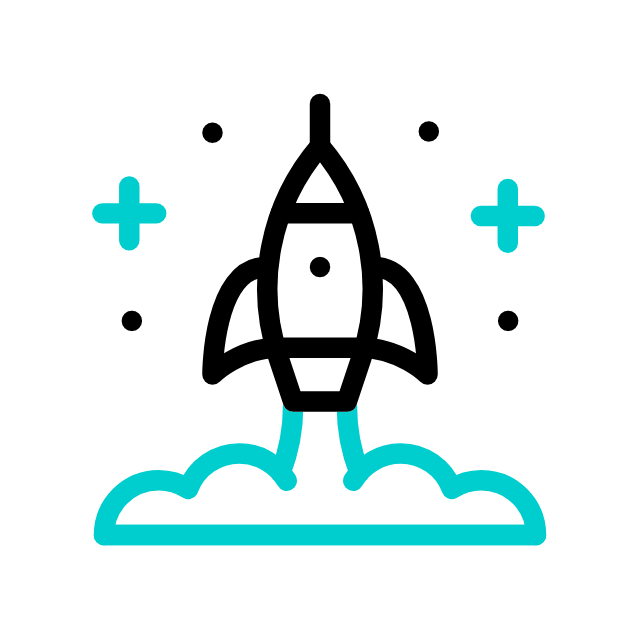
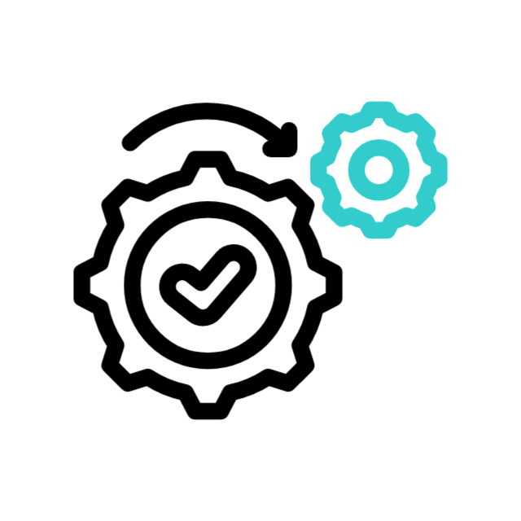

Seamless Collaboration from Development to Delivery
Plan
Develop
Build
Test

Release
Deploy

Operate
Monitor
Pray
Planning Phase
In the planning phase, teams define the project goals, create roadmaps, and collaborate to ensure a shared understanding of requirements and objectives.
Developing Phase
This phase involves writing, reviewing, and managing code, leveraging version control systems to ensure efficient collaboration and traceability.
Building Phase
The building phase focuses on automating the integration of code into deployable artifacts, ensuring consistency and reducing manual errors.
Testing Phase
In the testing phase, automated and manual tests are executed to validate the functionality, performance, and security of the application.
Releasing Phase
The building phase focuses on automating the integration of code into deployable artifacts, ensuring consistency and reducing manual errors.
Deploying Phase
Deployment involves releasing the application to production environments in a controlled and automated manner to ensure smooth updates.
Operating Phase
The operate phase monitors and manages the application in production, ensuring high availability, reliability, and performance.
Monitoring Phase
Monitoring focuses on gathering and analyzing metrics, logs, and user feedback to improve the application and address issues proactively.